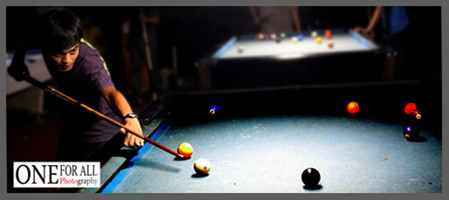

Pengalaman saya

Moch Gilang Fadilah Pengalaman saya tak begitu jauh namun saya pernah menggeluti dunia Photografer semenjak saya sekolah kelas 3 SMP, Saya pertama kali tertarik dengan seorang Photografer yang berkujung ke rumah saya kebetulan dia adalah teman dekat orang tua saya dan dia memamerkan hasil foto-fotonya dan saya mulai tertarik dan bertanya tanya tentang Camera yang digunakan yang lebih baik, Saat itu saya belajar bagai mana cara menggunakan kamera yang baik, cara memegang camera yang benar, dan cara mengambil gambar yang optimal, waktu pertama saya belajar saya menggunakan Camera CANON 500D saya memilih camera tipe tersebut karena itu tipe yang cocok untuk Formula dan hasil gambar yang lumayan bagus.
PhotoshopSiapa yang gak tau dengan Software Photoshop ini dia software editor yang sangat di gemari banyak kalangan, ini nih software andalan para photografer, Saya pertama mengenal dan belajar Photoshop setelah satu bulan saya belajar memotret dan setelah itu belajar editor selama satu minggu saya belajar Photoshop dengan teknik dasar dan saya kembangkan dari tutorial dan sampai saat ini saya masih mengembangkan dan mempelajari Photoshop lebih dalam.